DO-OCRACY
Whoever does it, decides. Nobody does the dishes. One Tuesday night of Hack Your Hackerspace, up to 8 members on gamepads, keyboard and phones.

Whoever does it, decides. Nobody does the dishes. One Tuesday night of Hack Your Hackerspace, up to 8 members on gamepads, keyboard and phones.